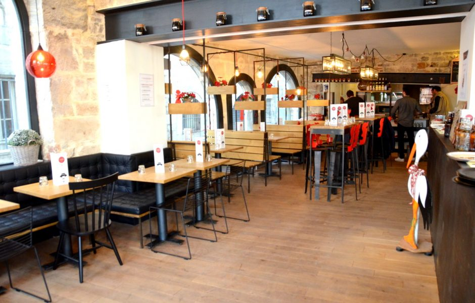

Cocina regional - Restaurante alsaciana, a Besançon, le da la bienvenida en un ambiente típicamente alsaciano para descubrir los tesoros culinarios de esta región mágica, todo en un ambiente agradable. Que pedir de más ? AUTÉNTICO - Aquí, flammenkueches son legión, de lo real a través de la vegetariana Munster. Algunos entrantes y postres completan el menú ya es muy tentador
Si quiere reservar Pinche aquí
Situado en la zona comercial de Carrefour Chalezeule, a las puertas de Besançon, el Buffet Chalèze ofrece cocina tradicional japonesa y francesa en un buffet libre. Almuerza o cena todos los días de la semana en un ambiente agradable y exótico, cálido y moderno, inspirado en la cultura japonesa y francesa. También podrás encontrar una amplia selección de nuestros platos a domicilio. Nuestro amplio comedor con 300 cubiertos se puede privatizar totalmente para cualquier tipo de evento.

Si quiere reservar Pinche aquí
Si quieres llevarte un buen recuerdo de Plaza Castan , ven primero a este bar. Prueba una pizza fascinante . Piz'Bar La Plage ofrece un servicio rápido a sus huéspedes. La mayor parte del tiempo, hay un ambiente familiar aquí. Google le otorga una puntuación de 4,3, por lo que puedes elegir este lugar para pasar un buen rato